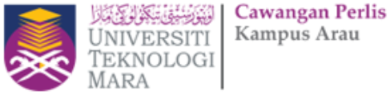
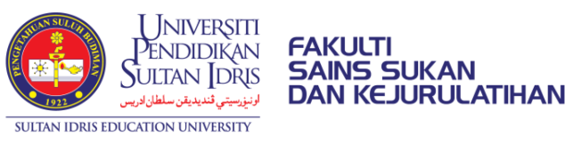

Find a centre near you
Tap a university to see its services, fees, opening hours and contacts.

Sports Science · 2024Faculty of Sports Science & Recreation (FSR), UiTM PerlisArau, Perlis
Sports Science · 2024Faculty of Sports Science & Coaching (FSSKj), UPSITanjong Malim, PerakSports Science · 2024Faculty of Education & Sports Studies (FPPS), UMSKota Kinabalu, SabahAbout the programme
ISN Satellite Centres first opened in 2007, run by ISN itself to provide sports science services to state-level athletes across the country. In 2018 every state satellite centre closed because of cost constraints.
Demand for sports science and medicine expertise in the states stayed strong, as more people in sport recognised the value of science, medicine and technology. ISN therefore relaunched the programme as a partnership with strategic partners, recognising university faculties as ISN Satellite Centres.
The ISN Satellite Centre Policy Paper was approved at the Sixth-Term Board of the Institute Meeting No. 4 on 19 July 2022.
Section 24, Act 729
The programme is run under Section 24 of the National Sports Institute Act 2011 (Act 729).
- 01The Institute may establish satellite centres to provide advisory, consultancy, research and related services in sports science and sports medicine.
- 02A satellite centre is headed by a person appointed by the Institute.
- 03The head of a satellite centre is responsible to the Institute and carries out any duties the Institute assigns.
- 04A satellite centre that runs a clinic, pharmacy, laboratory or other sports medicine facility is subject to the written laws on establishing, maintaining and administering those facilities.
- 05A satellite centre uses the name given to it by the Institute.
What a centre does
Each satellite centre aims to be a hub for ISN’s functions:
- Provide services in sports science, sports medicine and/or sports technology.
- Carry out studies and research in sports science, sports medicine and/or sports technology (jointly with ISN).
- Develop sports technology and innovation in sport.
- Other functions under Section 5 of the ISN Act.
Selection & funding
- 01All activities at an ISN Satellite Centre must be in line with ISN’s vision, mission, motto, strategic plan and Section 24 of the ISN Act.
- 02All activities and services offered are subject to national law and the regulations set by ISN.
- 03Other selection criteria for strategic partners: relevant skills and expertise, location, logistics, activities, services and facilities offered, and other confirmed benefits.
- 04Setting up an ISN Satellite Centre has no financial implication for ISN. All operating and management costs are borne by the satellite centre.
- 05Setting up, recognising and managing a satellite centre is guided by KPIs, a business plan and an investment plan prepared by the centre.
From application to commercialisation
Evaluation visits & ceremonies
Photo galleries are published on the official ISN website.
Visit ISN headquarters
Institut Sukan Negara, Kompleks Sukan Negara, Bukit Jalil, 57000 Kuala Lumpur.